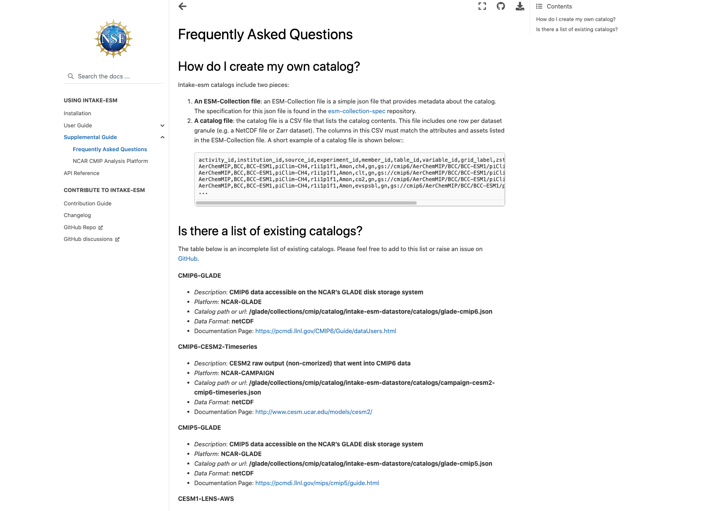

Using Intake-ESM to Analyze Data from CESM2-LE¶
In mid June, the CESM2 Large Ensemble dataset was made available to the public. This model was run in collaboration with the IBS Center for Climate Physics and the National Center for Atmospheric Research This dataset includes 100 ensemble members, at one degree spatial resolution, with each ensemble member including data from 1850 to 2100. If you are interested in learning more about how this ensemble was setup, be sure to check out the main webpage or read the pre-print of Rodgers et al. 2021 which describes this dataset in detail.
Main Challenge¶
One of these challenges with this dataset is dealing with the massive amount of output. The data are available through the NCAR Climate Data Gateway and via the IBS OpenDAP Server. There is also a subset of the dataset available on the GLADE file system on NCAR HPC resources available within the directory /glade/campaign/cgd/cesm/CESM2-LE/timeseries/.
Through these traditional file-access methods, one would need to scroll through and find one or a few of the millions of files produced by the model. Fortunately, this dataset has been catalogued, available using the Intake-esm package, which enables one to query the data, and read into a dictionary of xarray.Datasets, preventing the user from having to setup the concatenation and file search themselves.
Within the intake-esm FAQ section, there is a list of existing catalogs, as shown below:

At the top of the “Is there a list of existing catalogs” section, you can see the CMIP6-GLADE catalog, which includes:
Description of the catalog
Platform
Catalog path or url
Data format
Documentation page
For the CESM2-LE Catalog, we see:
CESM2-LE-GLADE
Description: ESM collection for the CESM2 LENS data stored on GLADE in /glade/campaign/cgd/cesm/CESM2-LE/timeseries
Platform: NCAR-GLADE
Catalog path or url: /glade/collections/cmip/catalog/intake-esm-datastore/catalogs/glade-cesm2-le.json
Data Format: netCDF
Documentation Page: https://www.cesm.ucar.edu/projects/community-projects/LENS2/
We are most interested in the catalog path here
Using the Catalog¶
Now that we found the catalog file, and see that it is the dataset we are interested in, we can start our analysis!
Imports¶
import intake
import matplotlib.pyplot as plt
import xarray as xr
from distributed import Client
from ncar_jobqueue import NCARCluster
Spin up our Dask Cluster¶
# Create our NCAR Cluster - which uses PBSCluster under the hood
cluster = NCARCluster()
# Spin up 20 workers
cluster.scale(20)
# Assign the cluster to our Client
client = Client(cluster)
client
Client
Client-2ab787b8-f6f0-11eb-abf7-87719d972cea
| Connection method: Cluster object | Cluster type: PBSCluster |
| Dashboard: https://jupyterhub.hpc.ucar.edu/stable/user/mgrover/proxy/8787/status |
Cluster Info
PBSCluster
05789642
| Dashboard: https://jupyterhub.hpc.ucar.edu/stable/user/mgrover/proxy/8787/status | Workers: 10 |
| Total threads: 20 | Total memory: 232.80 GiB |
Scheduler Info
Scheduler
Scheduler-2afb02c0-5d3f-44e3-b8ab-bcb991af9ed1
| Comm: tcp://10.12.206.59:39383 | Workers: 10 |
| Dashboard: https://jupyterhub.hpc.ucar.edu/stable/user/mgrover/proxy/8787/status | Total threads: 20 |
| Started: Just now | Total memory: 232.80 GiB |
Workers
Worker: 1
| Comm: tcp://10.12.206.40:42132 | Total threads: 2 |
| Dashboard: https://jupyterhub.hpc.ucar.edu/stable/user/mgrover/proxy/39517/status | Memory: 23.28 GiB |
| Nanny: tcp://10.12.206.40:32794 | |
| Local directory: /glade/scratch/mgrover/dask/casper-dav/local-dir/dask-worker-space/worker-71_v5oc_ | |
Worker: 4
| Comm: tcp://10.12.206.60:36759 | Total threads: 2 |
| Dashboard: https://jupyterhub.hpc.ucar.edu/stable/user/mgrover/proxy/36674/status | Memory: 23.28 GiB |
| Nanny: tcp://10.12.206.60:40729 | |
| Local directory: /glade/scratch/mgrover/dask/casper-dav/local-dir/dask-worker-space/worker-5mt6p9na | |
Worker: 5
| Comm: tcp://10.12.206.56:40939 | Total threads: 2 |
| Dashboard: https://jupyterhub.hpc.ucar.edu/stable/user/mgrover/proxy/35324/status | Memory: 23.28 GiB |
| Nanny: tcp://10.12.206.56:36870 | |
| Local directory: /glade/scratch/mgrover/dask/casper-dav/local-dir/dask-worker-space/worker-10b0k7vx | |
Worker: 8
| Comm: tcp://10.12.206.34:46147 | Total threads: 2 |
| Dashboard: https://jupyterhub.hpc.ucar.edu/stable/user/mgrover/proxy/37601/status | Memory: 23.28 GiB |
| Nanny: tcp://10.12.206.34:40662 | |
| Local directory: /glade/scratch/mgrover/dask/casper-dav/local-dir/dask-worker-space/worker-1gwrko6h | |
Worker: 11
| Comm: tcp://10.12.206.40:41383 | Total threads: 2 |
| Dashboard: https://jupyterhub.hpc.ucar.edu/stable/user/mgrover/proxy/35934/status | Memory: 23.28 GiB |
| Nanny: tcp://10.12.206.40:40213 | |
| Local directory: /glade/scratch/mgrover/dask/casper-dav/local-dir/dask-worker-space/worker-v2pl2gv5 | |
Worker: 12
| Comm: tcp://10.12.206.59:40121 | Total threads: 2 |
| Dashboard: https://jupyterhub.hpc.ucar.edu/stable/user/mgrover/proxy/37861/status | Memory: 23.28 GiB |
| Nanny: tcp://10.12.206.59:45250 | |
| Local directory: /glade/scratch/mgrover/dask/casper-dav/local-dir/dask-worker-space/worker-zwk0f96c | |
Worker: 13
| Comm: tcp://10.12.206.40:36750 | Total threads: 2 |
| Dashboard: https://jupyterhub.hpc.ucar.edu/stable/user/mgrover/proxy/32855/status | Memory: 23.28 GiB |
| Nanny: tcp://10.12.206.40:40586 | |
| Local directory: /glade/scratch/mgrover/dask/casper-dav/local-dir/dask-worker-space/worker-mi2rvi7_ | |
Worker: 17
| Comm: tcp://10.12.206.56:42324 | Total threads: 2 |
| Dashboard: https://jupyterhub.hpc.ucar.edu/stable/user/mgrover/proxy/42710/status | Memory: 23.28 GiB |
| Nanny: tcp://10.12.206.56:41805 | |
| Local directory: /glade/scratch/mgrover/dask/casper-dav/local-dir/dask-worker-space/worker-fpzptb2f | |
Worker: 18
| Comm: tcp://10.12.206.37:38592 | Total threads: 2 |
| Dashboard: https://jupyterhub.hpc.ucar.edu/stable/user/mgrover/proxy/40979/status | Memory: 23.28 GiB |
| Nanny: tcp://10.12.206.37:44954 | |
| Local directory: /glade/scratch/mgrover/dask/casper-dav/local-dir/dask-worker-space/worker-h_taqxfo | |
Worker: 19
| Comm: tcp://10.12.206.37:42880 | Total threads: 2 |
| Dashboard: https://jupyterhub.hpc.ucar.edu/stable/user/mgrover/proxy/39893/status | Memory: 23.28 GiB |
| Nanny: tcp://10.12.206.37:39854 | |
| Local directory: /glade/scratch/mgrover/dask/casper-dav/local-dir/dask-worker-space/worker-7z53ezhl | |
Read in the data catalog¶
As mentioned before, we use the catalog path /glade/collections/cmip/catalog/intake-esm-datastore/catalogs/glade-cesm2-le.json
cat = intake.open_esm_datastore(
'/glade/collections/cmip/catalog/intake-esm-datastore/catalogs/glade-cesm2-le.json'
)
/glade/u/home/mgrover/miniconda3/envs/hires-marbl/lib/python3.7/site-packages/IPython/core/interactiveshell.py:3437: DtypeWarning: Columns (8,9) have mixed types.Specify dtype option on import or set low_memory=False.
exec(code_obj, self.user_global_ns, self.user_ns)
Let’s take a second to investigate the catalog - each file on disk represents an asset, which means that there are over 4 million files within the /glade/campaign/cgd/cesm/CESM2-LE/timeseries/ directory
cat
glade-cesm2-le catalog with 72114 dataset(s) from 4751677 asset(s):
| unique | |
|---|---|
| component | 6 |
| stream | 25 |
| case | 36 |
| member_id | 90 |
| experiment | 2 |
| forcing_variant | 2 |
| control_branch_year | 14 |
| variable | 1868 |
| start_time | 184 |
| end_time | 185 |
| time_range | 192 |
| long_name | 1721 |
| units | 181 |
| vertical_levels | 1 |
| frequency | 7 |
| path | 4751677 |
| experiment_id | 180 |
Querying for our desired variable¶
In this case, we are interested in the surface temperature in Boulder, Colorado. There are numerous temperature variables in the dataset, we can search for all the long_names from atmospheric output.
We can use the wildcard here * to look for where both captial and lowercase temperature show up in the long_name
cat.search(component='atm', long_name=['temperature*', 'Temperature*']).df.long_name.unique()
array(['sea surface temperature',
'Minimum reference height temperature over output period',
'Tropopause Temperature', 'Reference height temperature',
'Total temperature tendency',
'Minimum surface temperature over output period',
'Temperature tendency',
'Maximum reference height temperature over output period',
'Temperature', 'Maximum surface temperature over output period',
'Potential Temperature', 'Temperature Variance',
'Surface temperature (radiative)',
'Temperature at 700 mbar pressure surface',
'Temperature at 700 mbar pressure surface',
'Temperature at 200 mbar pressure surface',
'Temperature at 200 mbar pressure surface',
'Temperature at 1000 mbar pressure surface',
'Temperature at 100 mbar pressure surface',
'Temperature at 50 mbar pressure surface',
'Temperature at 500 mbar pressure surface',
'Temperature at 500 mbar pressure surface',
'Lowest model level temperature',
'Temperature at 10 mbar pressure surface',
'Temperature at 850 mbar pressure surface',
'Temperature at 850 mbar pressure surface'], dtype=object)
Query and Subset our Catalog¶
Let’s go with Lowest model level temperature since this represents the closest to the surface without being at the actual surface of the earth. We pass the component and long_name into the query, which reduces the number of datasets to 8!
subset = cat.search(component='atm', long_name='Lowest model level temperature')
subset
glade-cesm2-le catalog with 8 dataset(s) from 1032 asset(s):
| unique | |
|---|---|
| component | 1 |
| stream | 1 |
| case | 8 |
| member_id | 40 |
| experiment | 2 |
| forcing_variant | 1 |
| control_branch_year | 4 |
| variable | 1 |
| start_time | 26 |
| end_time | 26 |
| time_range | 26 |
| long_name | 1 |
| units | 1 |
| vertical_levels | 1 |
| frequency | 1 |
| path | 1032 |
| experiment_id | 80 |
Read in using .to_dataset_dict()¶
We include the additional dask.config.set() to help with splitting up large chunks when reading in
with dask.config.set(**{'array.slicing.split_large_chunks': True}):
dsets = subset.to_dataset_dict()
--> The keys in the returned dictionary of datasets are constructed as follows:
'component.experiment.stream.forcing_variant.control_branch_year.variable'
dsets.keys()
dict_keys(['atm.historical.cam.h1.smbb.1231.TBOT', 'atm.historical.cam.h1.smbb.1251.TBOT', 'atm.ssp370.cam.h1.smbb.1281.TBOT', 'atm.historical.cam.h1.smbb.1301.TBOT', 'atm.ssp370.cam.h1.smbb.1251.TBOT', 'atm.ssp370.cam.h1.smbb.1301.TBOT', 'atm.historical.cam.h1.smbb.1281.TBOT', 'atm.ssp370.cam.h1.smbb.1231.TBOT'])
Let’s take a look at the keys - these are defined by the groupby attributes in the catalog. The groupby attributes in this case are:
component.experiment.stream.forcing_variant.control_branch_year.variable
Component - which component this output is from (ex. atm represents the atmosphere)
Experiment - which experiment this is from, in this case, this is
ssp370which is one of the CMIP6 future experimentsStream - which stream this output is from, in this case, this is
cam.h1, which represents daily outputControl Branch Year - which year the ensemble branched off from, these are described within the CESM2-LE documentation page
Variable - which variable you are working with
Define a helper function which subsets the data, groups by year, and returns the data array¶
def subset_ds(ds):
# Subset for TBOT and choose Boulder, Colorado's lat and lon and convert to degC
da = ds.TBOT.sel(lat=40.015, lon=-105.2705, method='nearest') - 273.15
da = da.groupby('time.year').mean()
# Make sure that time is the format of a string
da['year'] = da.year.astype(int)
return da
Look at one of the datasets¶
ds = dsets['atm.ssp370.cam.h1.smbb.1301.TBOT']
Apply our function¶
da = subset_ds(ds)
Plot our Results!¶
# Setup the figure
fig = plt.figure(figsize=(12, 8))
ax = plt.subplot(111)
# Loop through and plot each member_id
for member_id in da.member_id.values:
da.sel(member_id=member_id).plot(ax=ax, label=member_id)
# Limit the axis from 2015 to 2100
plt.xlim(2015, 2100)
# Increase the ticksize
plt.xticks(fontsize=14)
plt.yticks(fontsize=14)
# Add some labels and increase the size
plt.xlabel('Year', fontsize=16)
plt.ylabel('Temperature (degC)', fontsize=16)
# Add a legend
plt.legend(title='Member IDs', fontsize=12)
# Add a title
plt.title(
'Experiment: SSP370 \n Forcing Variant: Smoothed Biomass \n Control Branch Year: 1301 \n 2015 - 2100',
fontsize=20,
);
Conclusion¶
While this was a generally simple analysis, I hope this helps you see how powerful intake-esm can be when working with large datasets such as the CESM2-Large Ensemble!